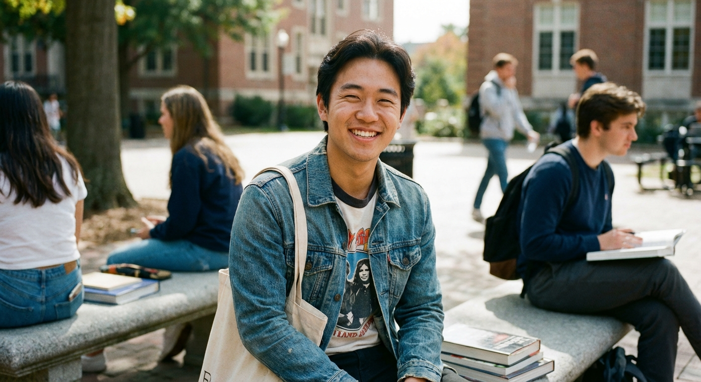
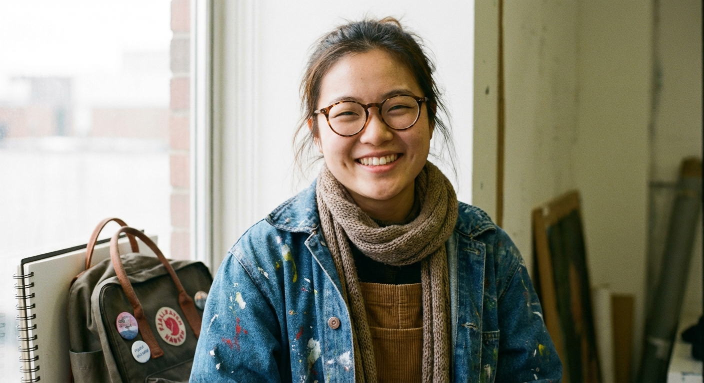
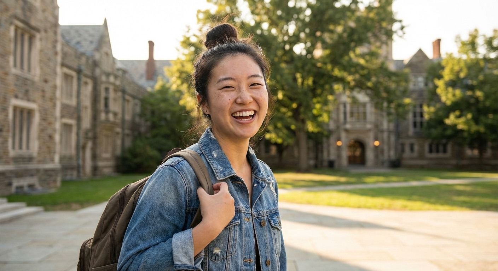

We're More Than Guides, We're Your Friends in Shanghai
Our buddies are passionate and knowledgeable students from Shanghai's top universities, eager to share the city they love.

Chen
University: Fudan University
Major: History
Interests: Museums, old architecture, street photography

Jing
University: Tongji University
Major: Architecture
Interests: Art galleries, coffee shop hopping, urban design
Wei
University: Jiao Tong University
Major: Marketing
Interests: Nightlife, trend culture, craft beer

Lily
University: SISU
Major: English Literature
Interests: Bookstores, theater, local cuisine